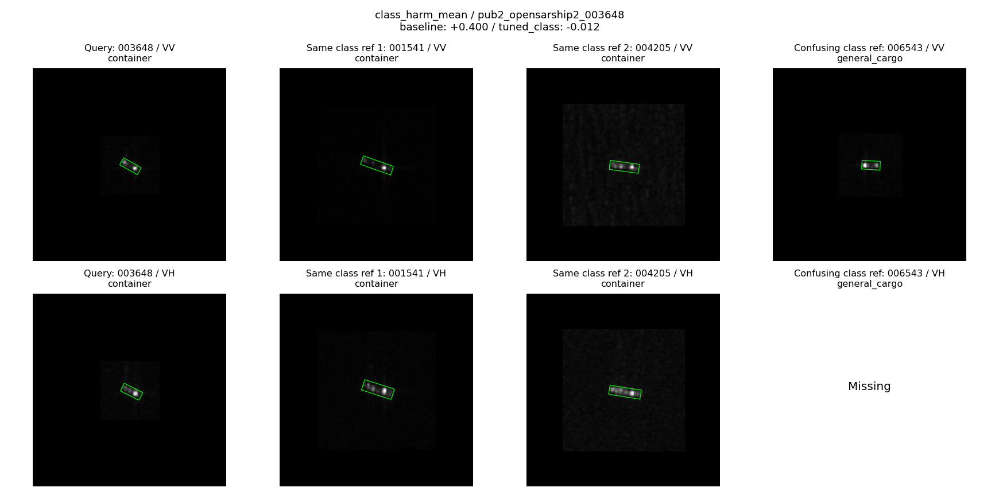
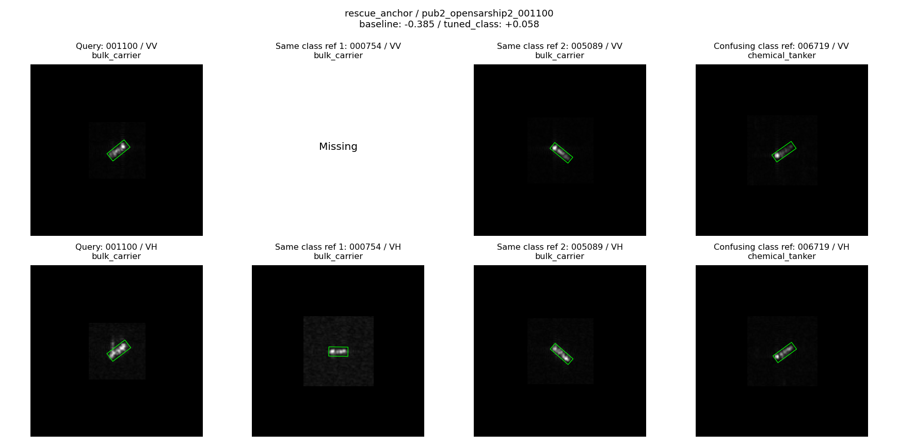
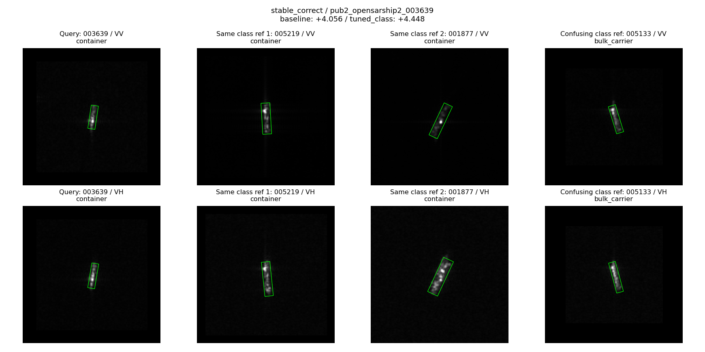
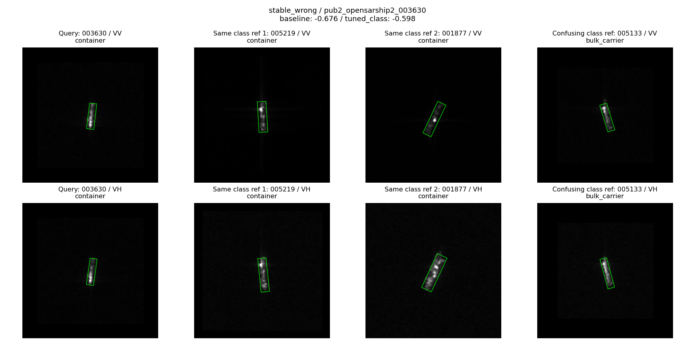

OSS2 source719 / historical development228 / fixed32 references. Development-selected results, NOT independent validation. M2/M3/head fixed; M3 message cached.
{
"class_gate": {
"run": "post_class_gate_task_lr_17",
"position": "post",
"config": "task_lr",
"epoch": 5,
"metrics": {
"oa": 59.64912280701754,
"ba": 52.647271869683145,
"nll": 1.2975702194740442,
"balanced_nll": 1.460060572414455
}
},
"mean_gate": {
"run": "post_mean_gate_task_lr_17",
"position": "post",
"config": "task_lr",
"epoch": 5,
"metrics": {
"oa": 60.08771929824561,
"ba": 52.92817074608763,
"nll": 1.2976306245156768,
"balanced_nll": 1.4624263410097837
}
}
}
| run | position | design | config | seed | epoch | ce | auxiliary_ce | vv_update | vh_update | oa | ba | nll | balanced_nll | last_oa | last_ba | seconds |
|---|---|---|---|---|---|---|---|---|---|---|---|---|---|---|---|---|
| post_class_gate_extended_17 | post | class_gate | extended | 17 | 6 | 0.388081 | 0.999135 | 0.029559 | 0.029800 | 59.210526 | 52.359916 | 1.305472 | 1.455790 | 59.210526 | 52.359916 | 43.593882 |
| post_class_gate_gain_17 | post | class_gate | gain | 17 | 5 | 0.382254 | 1.000779 | 0.061329 | 0.062942 | 59.649123 | 52.640814 | 1.302113 | 1.463193 | 58.771930 | 52.072559 | 29.608962 |
| post_class_gate_sharp_17 | post | class_gate | sharp | 17 | 4 | 0.393632 | 1.003157 | 0.047449 | 0.046012 | 59.649123 | 52.640814 | 1.305623 | 1.465797 | 58.771930 | 52.072559 | 49.443464 |
| post_class_gate_task_lr_17 | post | class_gate | task_lr | 17 | 5 | 0.374739 | 0.990137 | 0.083725 | 0.086461 | 59.649123 | 52.647272 | 1.297570 | 1.460061 | 57.456140 | 52.023005 | 52.449171 |
| post_mean_gate_extended_17 | post | mean_gate | extended | 17 | 6 | 0.388153 | 0.999190 | 0.029693 | 0.029851 | 59.210526 | 52.359916 | 1.305869 | 1.455788 | 59.210526 | 52.359916 | 54.155003 |
| post_mean_gate_gain_17 | post | mean_gate | gain | 17 | 5 | 0.382557 | 1.000864 | 0.061796 | 0.062787 | 59.649123 | 52.640814 | 1.301659 | 1.462118 | 58.333333 | 51.791660 | 33.638531 |
| post_mean_gate_task_lr_17 | post | mean_gate | task_lr | 17 | 5 | 0.376048 | 0.989800 | 0.086362 | 0.091754 | 60.087719 | 52.928171 | 1.297631 | 1.462426 | 57.456140 | 51.223405 | 38.272889 |
| pre_class_gate_extended_17 | pre | class_gate | extended | 17 | 3 | 0.416705 | 0.871734 | 0.003921 | 0.005307 | 59.210526 | 51.553858 | 1.302792 | 1.462831 | 58.771930 | 51.266502 | 41.104147 |
| pre_class_gate_gain_17 | pre | class_gate | gain | 17 | 5 | 0.394181 | 0.870979 | 0.023861 | 0.028977 | 59.649123 | 51.834757 | 1.312665 | 1.462874 | 58.771930 | 51.266502 | 37.922369 |
| pre_class_gate_sharp_17 | pre | class_gate | sharp | 17 | 2 | 0.421623 | 0.871400 | 0.006721 | 0.008291 | 59.210526 | 51.553858 | 1.301507 | 1.465014 | 58.771930 | 51.266502 | 35.318945 |
| pre_class_gate_task_lr_17 | pre | class_gate | task_lr | 17 | 5 | 0.384275 | 0.869334 | 0.044572 | 0.044577 | 59.210526 | 52.353458 | 1.312122 | 1.464032 | 58.771930 | 52.066102 | 37.950310 |
| pre_mean_gate_extended_17 | pre | mean_gate | extended | 17 | 2 | 0.424053 | 0.871395 | 0.001740 | 0.001888 | 59.210526 | 51.553858 | 1.297926 | 1.462780 | 58.333333 | 50.985603 | 30.647166 |
| pre_mean_gate_gain_17 | pre | mean_gate | gain | 17 | 5 | 0.396822 | 0.871003 | 0.023169 | 0.025015 | 59.649123 | 51.834757 | 1.315249 | 1.465662 | 58.771930 | 51.266502 | 31.413812 |
| pre_mean_gate_task_lr_17 | pre | mean_gate | task_lr | 17 | 5 | 0.388089 | 0.868993 | 0.050557 | 0.044495 | 59.210526 | 52.353458 | 1.319069 | 1.469495 | 58.771930 | 52.066102 | 39.244274 |
| candidate | control | rescues | harms | changes | delta_oa | delta_ba | delta_nll | comparison |
|---|---|---|---|---|---|---|---|---|
| post_class_gate_extended_17 | post_mean_gate_extended_17 | 0 | 0 | 0 | 0.000000 | 0.000000 | -0.000397 | matched_config_selected |
| post_class_gate_extended_17 | post_mean_gate_extended_17 | 0 | 0 | 0 | 0.000000 | 0.000000 | -0.000397 | matched_config_last |
| post_class_gate_extended_17 | off | 3 | 1 | 5 | 0.877193 | 2.530196 | 0.008912 | same_weights |
| post_class_gate_extended_17 | uniform_context | 0 | 0 | 0 | 0.000000 | 0.000000 | 0.000118 | same_weights |
| post_class_gate_extended_17 | spatial_mean | 1 | 0 | 1 | 0.438596 | 1.086957 | 0.001976 | same_weights |
| post_class_gate_gain_17 | post_mean_gate_gain_17 | 0 | 0 | 0 | 0.000000 | 0.000000 | 0.000454 | matched_config_selected |
| post_class_gate_gain_17 | post_mean_gate_gain_17 | 1 | 0 | 1 | 0.438596 | 0.280899 | 0.000019 | matched_config_last |
| post_class_gate_gain_17 | off | 3 | 0 | 5 | 1.315789 | 2.811094 | 0.008116 | same_weights |
| post_class_gate_gain_17 | uniform_context | 0 | 0 | 0 | 0.000000 | 0.000000 | 0.000049 | same_weights |
| post_class_gate_gain_17 | spatial_mean | 1 | 0 | 1 | 0.438596 | 0.862069 | 0.002332 | same_weights |
| post_class_gate_sharp_17 | post_mean_gate_gain_17 | 0 | 0 | 1 | 0.000000 | 0.000000 | 0.003964 | matched_config_selected |
| post_class_gate_sharp_17 | post_mean_gate_gain_17 | 1 | 0 | 2 | 0.438596 | 0.280899 | -0.000758 | matched_config_last |
| post_class_gate_sharp_17 | off | 2 | 0 | 3 | 0.877193 | 1.949025 | 0.010169 | same_weights |
| post_class_gate_sharp_17 | uniform_context | 0 | 0 | 0 | 0.000000 | 0.000000 | 0.000277 | same_weights |
| post_class_gate_sharp_17 | spatial_mean | 1 | 0 | 1 | 0.438596 | 1.086957 | 0.002463 | same_weights |
| post_class_gate_task_lr_17 | post_mean_gate_task_lr_17 | 0 | 1 | 1 | -0.438596 | -0.280899 | -0.000060 | matched_config_selected |
| post_class_gate_task_lr_17 | post_mean_gate_task_lr_17 | 1 | 1 | 3 | 0.000000 | 0.799600 | -0.000364 | matched_config_last |
| post_class_gate_task_lr_17 | off | 4 | 1 | 7 | 1.315789 | 2.817552 | 0.003362 | same_weights |
| post_class_gate_task_lr_17 | uniform_context | 0 | 0 | 0 | 0.000000 | 0.000000 | 0.001390 | same_weights |
| post_class_gate_task_lr_17 | spatial_mean | 1 | 0 | 1 | 0.438596 | 0.862069 | 0.003658 | same_weights |
| pre_class_gate_extended_17 | pre_mean_gate_extended_17 | 0 | 0 | 0 | 0.000000 | 0.000000 | 0.004866 | matched_config_selected |
| pre_class_gate_extended_17 | pre_mean_gate_extended_17 | 1 | 0 | 1 | 0.438596 | 0.280899 | -0.000443 | matched_config_last |
| pre_class_gate_extended_17 | off | 1 | 0 | 1 | 0.438596 | 0.862069 | 0.004137 | same_weights |
| pre_class_gate_extended_17 | uniform_context | 0 | 0 | 0 | 0.000000 | 0.000000 | 0.000588 | same_weights |
| pre_class_gate_extended_17 | spatial_mean | 0 | 0 | 0 | 0.000000 | 0.000000 | 0.000770 | same_weights |
| pre_class_gate_gain_17 | pre_mean_gate_gain_17 | 0 | 0 | 1 | 0.000000 | 0.000000 | -0.002584 | matched_config_selected |
| pre_class_gate_gain_17 | pre_mean_gate_gain_17 | 0 | 0 | 0 | 0.000000 | 0.000000 | -0.003049 | matched_config_last |
| pre_class_gate_gain_17 | off | 3 | 0 | 3 | 1.315789 | 2.005037 | 0.017769 | same_weights |
| pre_class_gate_gain_17 | uniform_context | 0 | 0 | 1 | 0.000000 | 0.000000 | 0.000663 | same_weights |
| pre_class_gate_gain_17 | spatial_mean | 0 | 0 | 1 | 0.000000 | 0.000000 | 0.001810 | same_weights |
| pre_class_gate_sharp_17 | pre_mean_gate_gain_17 | 0 | 1 | 2 | -0.438596 | -0.280899 | -0.013742 | matched_config_selected |
| pre_class_gate_sharp_17 | pre_mean_gate_gain_17 | 0 | 0 | 1 | 0.000000 | 0.000000 | -0.005228 | matched_config_last |
| pre_class_gate_sharp_17 | off | 1 | 0 | 2 | 0.438596 | 0.862069 | 0.005655 | same_weights |
| pre_class_gate_sharp_17 | uniform_context | 0 | 0 | 1 | 0.000000 | 0.000000 | 0.001189 | same_weights |
| pre_class_gate_sharp_17 | spatial_mean | 0 | 0 | 1 | 0.000000 | 0.000000 | 0.001564 | same_weights |
| pre_class_gate_task_lr_17 | pre_mean_gate_task_lr_17 | 0 | 0 | 1 | 0.000000 | 0.000000 | -0.006947 | matched_config_selected |
| pre_class_gate_task_lr_17 | pre_mean_gate_task_lr_17 | 0 | 0 | 1 | 0.000000 | 0.000000 | -0.004743 | matched_config_last |
| pre_class_gate_task_lr_17 | off | 4 | 2 | 7 | 0.877193 | 2.523738 | 0.020071 | same_weights |
| pre_class_gate_task_lr_17 | uniform_context | 1 | 1 | 3 | 0.000000 | 0.799600 | -0.001724 | same_weights |
| pre_class_gate_task_lr_17 | spatial_mean | 1 | 1 | 3 | 0.000000 | 0.799600 | 0.000777 | same_weights |
| post_class_gate_task_lr_17 | post_mean_gate_task_lr_17 | 0 | 1 | 1 | -0.438596 | -0.280899 | -0.000060 | independently_tuned_best |

{
"baseline": {
"prediction": 3,
"margin": 0.40032318234443665
},
"tuned_class": {
"prediction": 1,
"margin": -0.011548638343811035
},
"tuned_mean": {
"prediction": 3,
"margin": 0.06019604206085205
},
"off": {
"prediction": 3,
"margin": 0.09159532189369202
},
"uniform_context": {
"prediction": 1,
"margin": -0.0065756142139434814
},
"spatial_mean": {
"prediction": 1,
"margin": -0.01302570104598999
},
"vv_only": {
"prediction": 3,
"margin": 0.38360294699668884
},
"vh_only": {
"prediction": 1,
"margin": -0.30355626344680786
}
}

{
"baseline": {
"prediction": 2,
"margin": -0.38485580682754517
},
"tuned_class": {
"prediction": 0,
"margin": 0.057980477809906006
},
"tuned_mean": {
"prediction": 0,
"margin": 0.11736398935317993
},
"off": {
"prediction": 2,
"margin": -0.41075724363327026
},
"uniform_context": {
"prediction": 0,
"margin": 0.08739984035491943
},
"spatial_mean": {
"prediction": 0,
"margin": 0.0061492919921875
},
"vv_only": {
"prediction": 2,
"margin": -0.389462411403656
},
"vh_only": {
"prediction": 0,
"margin": 0.0366857647895813
}
}

{
"baseline": {
"prediction": 3,
"margin": 4.055864334106445
},
"tuned_class": {
"prediction": 3,
"margin": 4.447704315185547
},
"tuned_mean": {
"prediction": 3,
"margin": 4.270725727081299
},
"off": {
"prediction": 3,
"margin": 4.065423965454102
},
"uniform_context": {
"prediction": 3,
"margin": 4.325942516326904
},
"spatial_mean": {
"prediction": 3,
"margin": 4.293494701385498
},
"vv_only": {
"prediction": 3,
"margin": 4.41233491897583
},
"vh_only": {
"prediction": 3,
"margin": 4.100793361663818
}
}

{
"baseline": {
"prediction": 0,
"margin": -0.6760067939758301
},
"tuned_class": {
"prediction": 0,
"margin": -0.5978639125823975
},
"tuned_mean": {
"prediction": 0,
"margin": -0.7378971576690674
},
"off": {
"prediction": 0,
"margin": -0.5930335521697998
},
"uniform_context": {
"prediction": 0,
"margin": -0.6695926189422607
},
"spatial_mean": {
"prediction": 0,
"margin": -0.6585304737091064
},
"vv_only": {
"prediction": 0,
"margin": -0.3729374408721924
},
"vh_only": {
"prediction": 0,
"margin": -0.8179600238800049
}
}